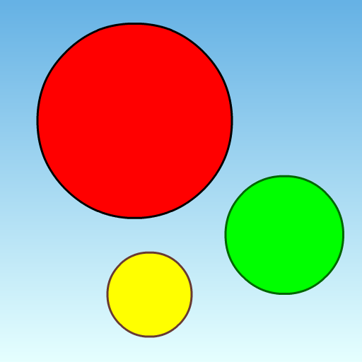

Circle Smash


Background
At Christmas, I was talking with my 13 year old granddaughter Korrah who confessed to me that she really did not like my first game Coffee Crash. She said she liked games that you could "play". What she meant was, she liked games where you had to think and act very quickly.
Together, we set out to design a game that she would like. The result is Circle Smash. A game with colored circles that grow and smash into each other. Fast reflexes are required to prevent 2 circles of the same color from smashing and ending the game.
Description
Circle Smash is a fast paced casual game where circles continually appear and then grow in size.
You remove circles by tapping on them, but don't remove all the circles as you only get points when 2 circles of different colors smash into each other.
The game ends when 2 circles of the same color smash together.